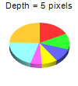
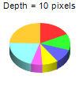
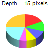
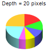
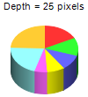

This example demonstrates the effects of different 3D depths.
ChartDirector allows the 3D depth and angles to be configured using PieChart.set3D and PieChart.set3D2.
ChartDirector 7.1 (C++ Edition)
3D Depth





Source Code Listing
#include "chartdir.h"
#include <stdio.h>
void createChart(int chartIndex, const char *filename)
{
char buffer[1024];
// the tilt angle of the pie
int depth = chartIndex * 5 + 5;
// The data for the pie chart
double data[] = {25, 18, 15, 12, 8, 30, 35};
const int data_size = (int)(sizeof(data)/sizeof(*data));
// Create a PieChart object of size 100 x 110 pixels
PieChart* c = new PieChart(100, 110);
// Set the center of the pie at (50, 55) and the radius to 38 pixels
c->setPieSize(50, 55, 38);
// Set the depth of the 3D pie
c->set3D(depth);
// Add a title showing the depth
sprintf(buffer, "Depth = %d pixels", depth);
c->addTitle(buffer, "Arial", 8);
// Set the pie data
c->setData(DoubleArray(data, data_size));
// Disable the sector labels by setting the color to Transparent
c->setLabelStyle("", 8, Chart::Transparent);
// Output the chart
c->makeChart(filename);
//free up resources
delete c;
}
int main(int argc, char *argv[])
{
createChart(0, "threeddepthpie0.png");
createChart(1, "threeddepthpie1.png");
createChart(2, "threeddepthpie2.png");
createChart(3, "threeddepthpie3.png");
createChart(4, "threeddepthpie4.png");
return 0;
}